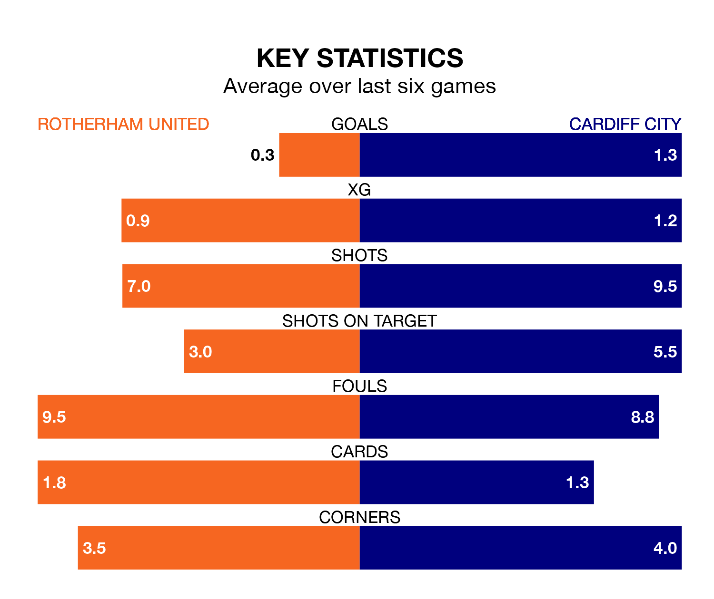

Cardiff City are strong favourites to take all three points despite Rotherham United's home advantage in Saturday lunchtime's match at the AESSEAL New York Stadium.
*Betting Company* are offering odds of 2.0 on Cardiff sealing the win, with the visitors sitting 12th in EFL Championship table.
Rotherham, who are 24th in the league and 38 points behind the Bluebirds, are priced at 3.6 to win. A draw is set at 3.25.
In the last 10 years, Rotherham and Cardiff have played each other on 11 occasions. Rotherham won one of them, Cardiff seven, and they drew three times.
On average, the Millers scored 0.8 goals and the Bluebirds 1.9 in those matches.
Their last meeting was on September 30, when Cardiff won 2-0 at home.
Rotherham are in bad form in EFL Championship, with one win and a draw from their last six games.
With three wins and three losses over that period, Cardiff's form is better – they have taken nine points from 18, compared to United's four.
With 32 goals in 45 games so far this season, the Millers are the league's lowest scorers with 0.7 goals per game. And they are conceding more than average, letting in 87 goals at a rate of 1.9 per game.
City are also below average scorers, with 1.1 goals per game, compared to a league average of 1.3. They have conceded 1.4 goals per game.
Rotherham's last match was on Saturday, a 2-0 loss against Bristol City.
Cardiff lost 4-1 against Middlesbrough last time out, also on Saturday, with Josh Bowler on the scoresheet.
Updated: 10:44 (UTC), 30/04/24